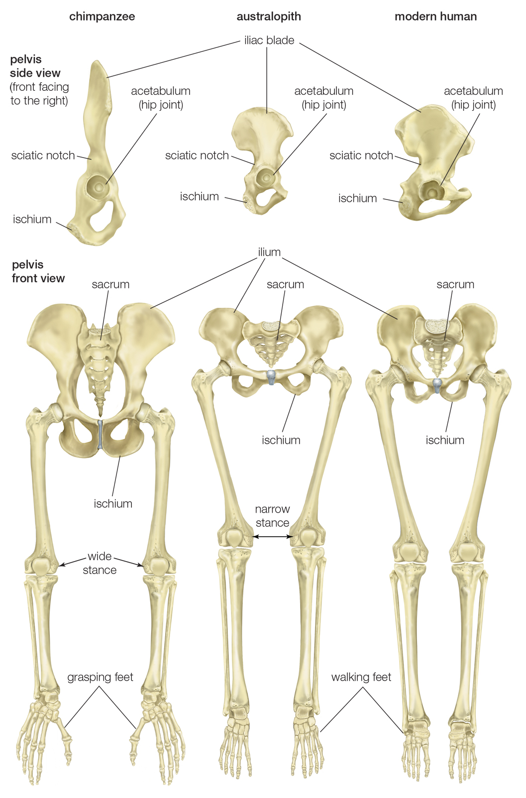

Chimp vs Human

Bipedalism
- Pelvis
Chimp, flat and tall
Humans, Bowl-shaped and short top view
- Hip sockets
Chimps, face outward
Humans, angled downard
- Knee join
chimp, The median plane of the femur bone is close to a 90 degree angle based on the socket of the pelvis
humans, The median plane of the femur bone is further from 90 degrees based on the socket of the pelvis
- Foramen magnum, the opening to the cranium that connects to the spinal cord
chimp, more slanted to the back of the skull
humans, toward the bottom of the skull
- Thumb length, relative to the middle finger
chimp, <= 40% of middle finger
humans, >= 50% of the middle finger